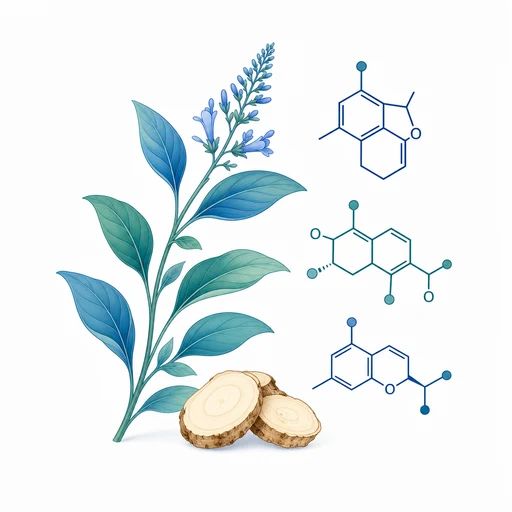
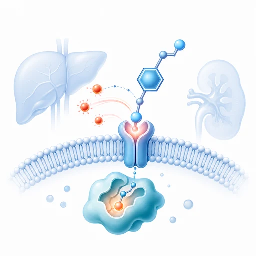
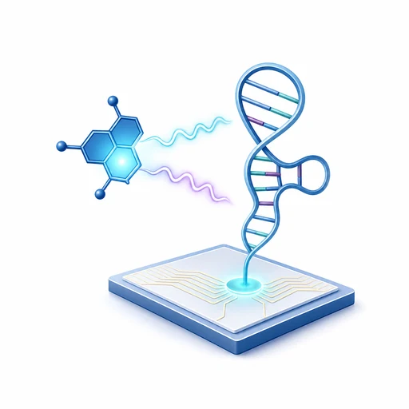
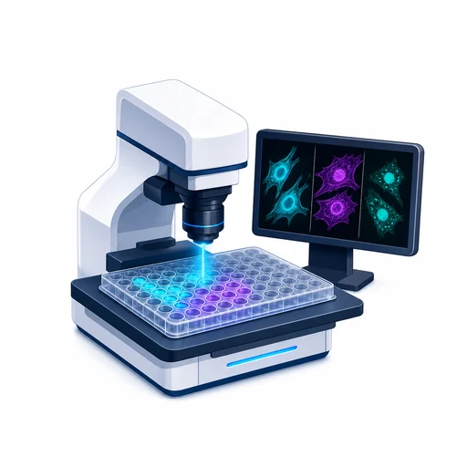
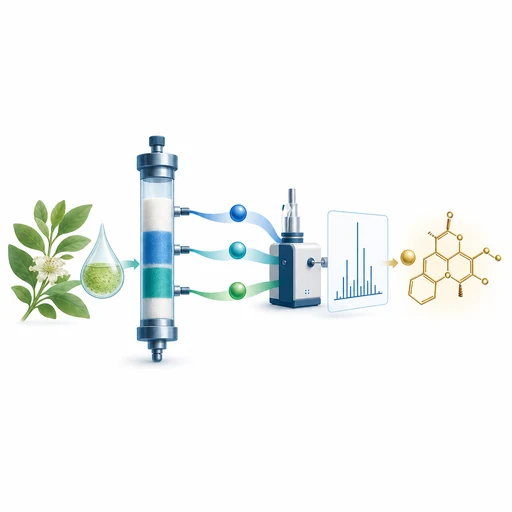

中药资源与天然产物
药用植物、药食同源资源与天然化合物库
RESEARCH
以分子可视化技术连接中药资源、生命过程、健康干预与大健康产品创新。
FROM PAPERS TO RESEARCH SYSTEM
田蒋为研究员团队以光学探针和生物传感为核心技术，把中药资源发现、疾病标志物识别、活性成分筛选、功效评价、作用机制验证与大健康转化串联为完整研究闭环。

药用植物、药食同源资源与天然化合物库

FAPα、活性氧/氮、酶与微环境变化

近红外荧光、光声、AIE与阵列传感

细胞—组织—动物多层次可视化评价

谱效导向、色谱分离与LC–MS结构解析
体内外功效、作用机制、健康干预与产品转化
RESEARCH CLUSTERS
既发展光学感知方法学，也回答中药药效物质与疾病机制问题，形成从资源发现、精准评价到健康干预和大健康产品创新的交叉研究体系。

面向复杂生物体系中的关键标志物，发展高灵敏、可激活的近红外荧光、光声及AIE探针，实现疾病进程和药物响应的时空可视化。

将分子探针、高通量筛选、谱效导向分离与质谱鉴定贯通，用可视化证据从中药及天然产物中精准发现活性先导化合物。

构建适配体、荧光传感阵列及无标记检测方法，用于中药真伪与产地鉴别、关键成分定量和质量安全评价。

面向疾病预防、健康维护与精准干预，聚焦肝肾损伤、纤维化、炎症及代谢健康，系统评价天然活性物质的功效、安全性与作用机制，推动药食同源资源和大健康产品创新。
PAPER EVIDENCE
SCIENTIFIC QUESTION